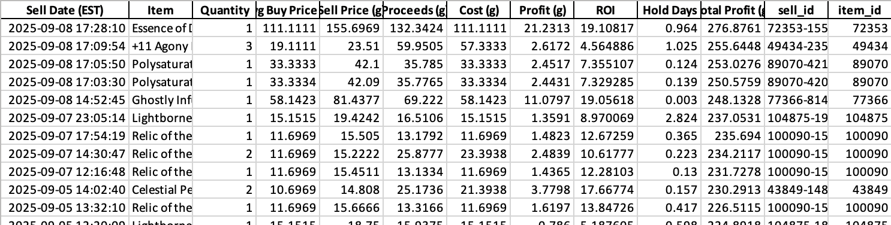
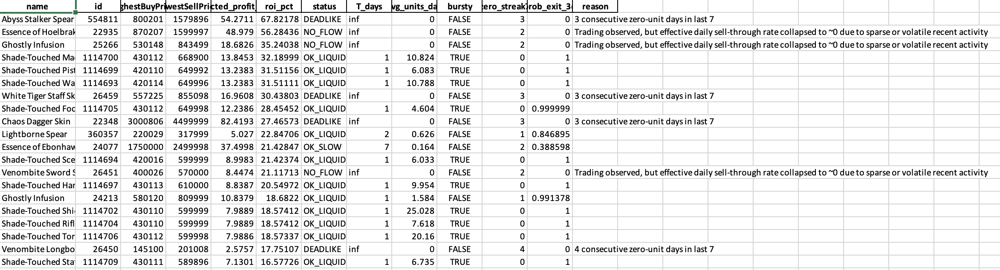

Virtual Marketplace Liquidity Modelling and Data Analysis
Guild Wars 2’s Trading Post works like a real electronic limit order book: players post buy orders (bids) and sell listings (asks), the book matches best bid/ask first, and a marketplace fee is charged on successful sales. This project treats that venue as a miniature market: a lightweight quant toolkit that pulls live data from the public API, screens items for liquidity and after‑fee spread, and executes disciplined flips. While experiment‑driven, the goal was practical profit, tracked transparently in exported P&L.
What It Does
- Screen items by turnover, depth, and after‑fee spread to find eligible flips
- Size positions with simple caps/limits and blacklist/whitelist constraints
- Track realized trades and running P&L to validate rules over time
- Export results to CSV/Excel for review, audit, and iteration
Workflow
- Pull orderbook / last‑price snapshots via API (cached for reproducibility)
- Apply liquidity & spread rules
- Surface candidates and compute net margins after fees
- Monitor flip opportunities; record fills
- Write Trades & Volume summaries to Excel
Summary Metrics (from PnL exports)
- Average net return per flip: 7.53 %
- Win rate: 81.48 %
- Total net P&L: 276.88 g
- Average holding time: 2.98 days
Data Outputs
- Trades & PnL (gw2_trades.xlsx): timestamp, item, buy/sell, qty, fees, net P&L, ROI
- Volume & Liquidity (gw2_flip_volume_analysis.xlsx): avg daily volume, depth, mid, spread %, after‑fee margin


Notes
- Designed for safe experimentation; logs & caches enable reproducibility
- Portable to other marketplaces with REST APIs (swap fetchers & fee model)
Key Features
- Liquidity‑aware screening (min volume/turnover + after‑fee spread)
- Simple CLI workflow with cached requests for reproducibility